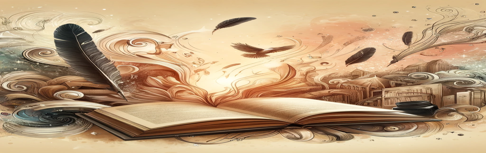

Introducción
Esta página web fue diseñada en la asignatura "Literatura y Escritura en Castellano". Esta asignatura nos brindó muchos conocimientos, pero también nos dio a conocer muchos textos literarios y sobre todo muchos autores importantes a nivel internacional. Toda esta información está compilada en esta página, con algunos de los autores, algunas de sus obras y una biografía breve, destacando una obra en específico.


Enfocarnos en la literatura y los textos literarios nos invita a explorar nuestra propia identidad y comprendernos mejor. Aunque no seamos los autores de las obras, estas forman parte de nuestro universo de posibilidades, ofreciéndonos historias de vidas pasadas o inventadas que nos brindan aprendizaje y reflexión. Por eso, los animamos a sumergirse en el vasto mundo literario y a explorar los textos que compartimos en nuestra página web.
